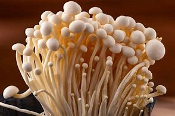

Ingredient Spotlight: Enoki Mushrooms

Overview
Description: Enoki mushrooms are small, delicate mushrooms known for their crunchy texture and mild flavor.
Origin: Native to East Asia, enoki mushrooms are commonly used in Japanese cuisine.
Nutritional Information
| Nutrient |
Amount per 100g |
| Calories |
37 |
| Fat |
0.2g |
| Carbohydrates |
7g |
| Protein |
2.7g |
Health Benefits:
- Low in calories and high in fiber.
- Rich in antioxidants and nutrients.
Culinary Uses
Flavor Profile: Enoki mushrooms have a mild, slightly fruity flavor that enhances many dishes.
Cooking Methods: Often used in soups, salads, and stir-fries.
Common Dishes:
- Enoki mushroom soup
- Stir-fried vegetables with enoki mushrooms
- Salads with fresh enoki mushrooms
Storage and Preparation Tips
Storage Guidelines: Store in the refrigerator in a paper bag to keep them fresh.
Preparation Tips: Rinse gently and trim the base before using.
Varieties and Substitutes
Types:
- White enoki mushrooms
- Brown enoki mushrooms
Substitutes:
Shiitake or oyster mushrooms can be used as substitutes in recipes.
Fun Facts and Trivia
- Enoki mushrooms can grow in clusters and have a unique appearance.
- They are often used in Asian cuisine for their texture and flavor.
FAQs
Q: Are enoki mushrooms edible?
A: Yes, enoki mushrooms are safe and delicious to eat.
Q: How do I cook enoki mushrooms?
A: They can be sautéed, boiled, or used raw in salads.